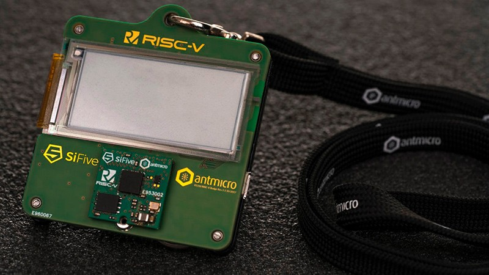

RISC-V – это открытая архитектура процессоров, разработанная в Калифорнийском университете в Беркли. Эта архитектура основана на сокращенном наборе команд (RISC) и позволяет разработчикам создавать свои собственные процессоры на основе этой архитектуры без необходимости покупать лицензионные продукты у крупных производителей процессоров.
RISC-V имеет несколько преимуществ перед другими архитектурами процессоров. Во-первых, это открытая архитектура, которая может использоваться и изменяться любым желающим. Это ускорит развитие инноваций и создаст более эффективные процессоры.
Во-вторых, RISC-V имеет очень малый набор команд, что делает его более эффективным. В отличие от других архитектур, RISC-V имеет только несколько базовых команд, которые могут быть эффективно оптимизированы для конкретных задач.
В-третьих, RISC-V имеет очень модульную структуру, что позволяет разработчикам создавать собственные процессоры, содержащие только необходимые модули. Это упрощает разработку и оптимизацию процессоров, а также позволяет сократить стоимость производства.
Сейчас, RISC-V применяется в встроенных системах, серверах, суперкомпьютерах и мобильных устройствах. Эта архитектура стала конкурентом для традиционных архитектур ARM и x86.
Однако, RISC-V все еще находится на ранней стадии развития и имеет несколько ограничений. Например, существует нехватка специалистов, которые могут разрабатывать процессоры на основе этой архитектуры.
